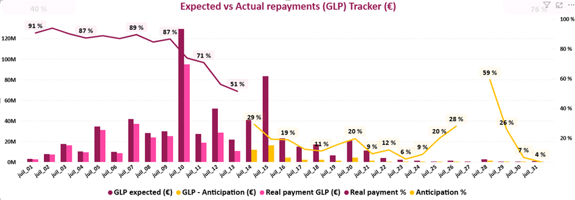
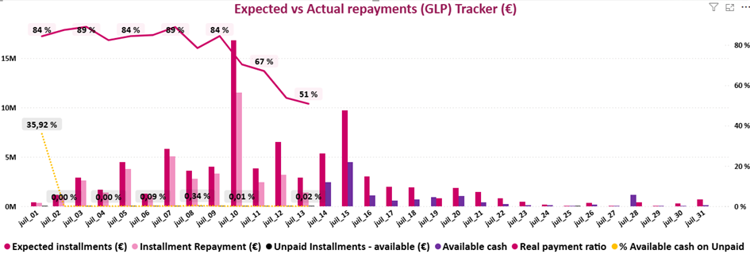
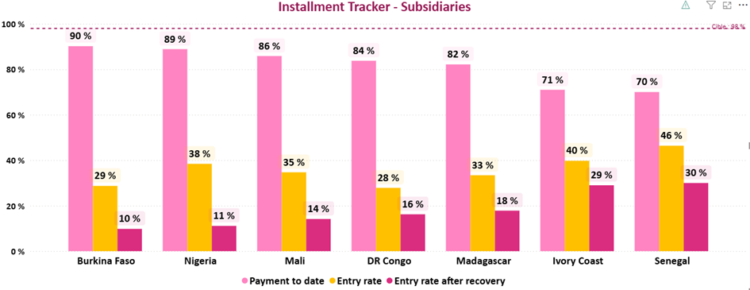
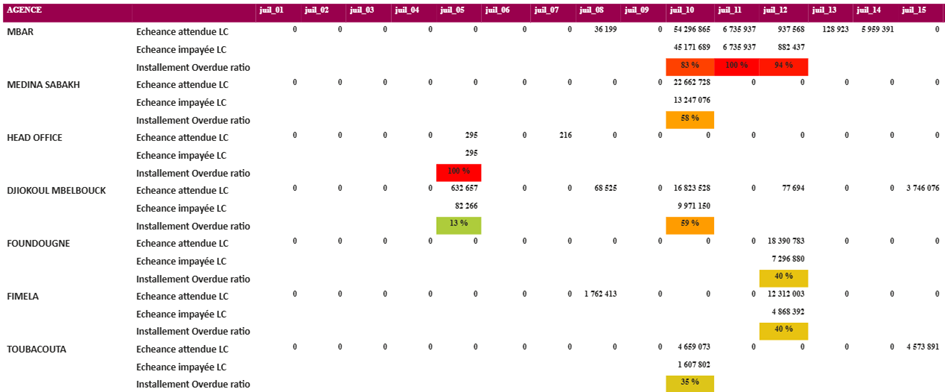
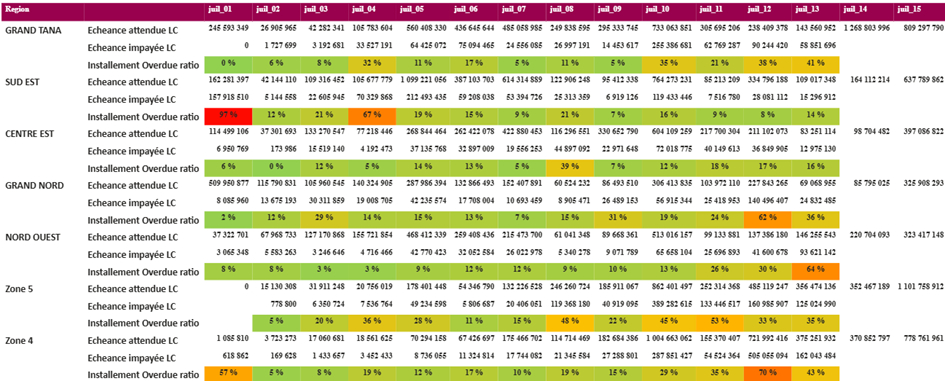
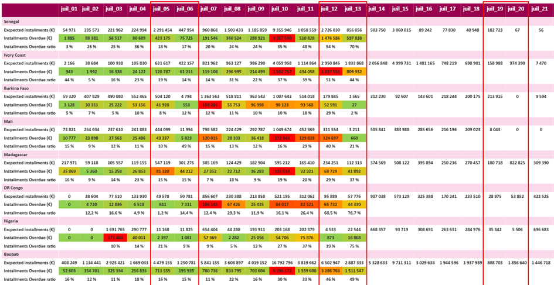
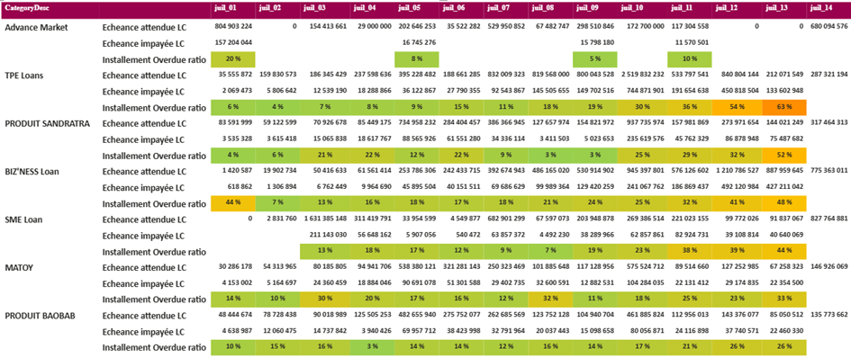

Visuels
Découvrez les principaux visuels de chaque onglet avec leurs descriptions détaillées, les KPIs utilisés et leur interprétation.

GLP (Gross Loan Portfolio)
Objectif
Ce graphique permet de suivre jour par jour l'évolution des remboursements, détecter les écarts par rapport à ce qui est prévu et mesurer le poids des paiements anticipés.
Éléments visuels
- GLP attendu (€) (barres roses foncées) : encours prévu chaque jour du mois
- Paiement réel GLP (€) (barres plus claires) : encours effectivement remboursé
- GLP anticipé (€) et % d'anticipation (courbe jaune) : remboursements réglés avant leur échéance
- Taux de paiement réel (%) (courbe violette) : proportion effectivement remboursée par rapport à l'attendu
Comment lire ce visuel
- Comparez les barres roses foncées et claires pour identifier les écarts de remboursement
- La courbe jaune indique le comportement proactif des clients (paiements anticipés)
- La courbe violette doit se rapprocher de 100% pour une performance optimale

Installments (Échéances)
Objectif
Ce graphique détaille les échéances attendues et leur état jour par jour, en mettant en évidence les impayés et la liquidité disponible.
Éléments visuels
- Expected installments (€) (barres roses) : échéances prévues
- Installment repayment (€) (barres violettes claires) : montants effectivement réglés
- Unpaid installments – available (€) et Available cash (€) : impayés et liquidité disponible chez les clients
- Real payment ratio (%) (courbe violette) : part effectivement remboursée
- % Available cash on unpaid (courbe jaune) : proportion de cash disponible couvrant les échéances en retard
Comment lire ce visuel
- Les barres roses montrent les échéances prévues quotidiennement
- L'écart entre attendu et remboursé révèle les retards de paiement
- La courbe jaune élevée indique que les clients ont les moyens mais ne paient pas

Benchmark (Comparaison filiales)
Objectif
Ce graphique en barres compare les performances des filiales du groupe sur trois indicateurs clés de recouvrement.
Éléments visuels
- Payment to date (%) (barres roses) : part des échéances déjà remboursées dans le mois
- Entry rate (%) (barres jaunes) : taux d'entrée en impayés parmi les clients qui étaient sains le mois précédent
- Entry rate after recovery (%) (barres rouges) : taux d'impayés restant après prise en compte des recouvrements
- Ligne de référence (pointillée) : cible groupe à 98% de Payment to date en fin de mois
Comment lire ce visuel
- Comparez les filiales entre elles pour identifier les meilleures pratiques
- Les barres roses doivent dépasser la ligne pointillée (objectif 98%)
- Des barres jaunes/rouges élevées signalent des problèmes de recouvrement

BranchDesc (Suivi par agence)
Objectif
Cette matrice représente le suivi des échéances par agence. Elle permet d'identifier rapidement les agences qui concentrent les retards.
Structure de la matrice
- Lignes : chaque agence du réseau
- Colonnes : chaque jour du mois courant
- Échéance attendue (LC) : montant prévu en devise locale
- Échéance impayée (LC) : montant non réglé à la date prévue
- Installment overdue ratio (%) : taux d'échéances impayées (impayé ÷ attendu)
Code couleurs
- Vert = faible taux d'impayés (situation OK)
- Orange = taux intermédiaire
- Rouge = forte proportion d'impayés (situation critique)

Region (Suivi par zone régionale)
Objectif
Cette matrice représente le suivi des échéances par zone régionale. Elle offre une vue plus agrégée que BranchDesc pour identifier les tendances géographiques.
Structure de la matrice
- Lignes : chaque région géographique
- Colonnes : chaque jour du mois courant
- Échéance attendue (LC) : montant prévu en devise locale
- Échéance impayée (LC) : montant non réglé à la date prévue
- Installment overdue ratio (%) : taux d'échéances impayées (impayé ÷ attendu)
Code couleurs
- Vert = faible taux d'impayés (situation OK)
- Orange = taux intermédiaire
- Rouge = forte proportion d'impayés (situation critique)

CategoryDesc (Suivi par produit de crédit)
Objectif
Cette matrice représente le suivi des échéances par type de produit de crédit. Elle permet d'analyser la performance de remboursement selon les catégories de prêts.
Structure de la matrice
- Lignes : chaque catégorie de produit de crédit
- Colonnes : chaque jour du mois courant
- Échéance attendue (LC) : montant prévu en devise locale
- Échéance impayée (LC) : montant non réglé à la date prévue
- Installment overdue ratio (%) : taux d'échéances impayées (impayé ÷ attendu)
Code couleurs
- Vert = faible taux d'impayés (situation OK)
- Orange = taux intermédiaire
- Rouge = forte proportion d'impayés (situation critique)

Installments by subsidiaries (Échéances par filiale)
Objectif
Ces trois graphiques représentent les performances de remboursement des différentes filiales, permettant une analyse comparative rapide.
Structure des graphiques
- Colonnes : chaque jour du mois courant
- Échéance attendue : montant prévu en devise locale
- Échéance impayée : montant non réglé à la date prévue
- Installment overdue ratio (%) : taux d'échéances impayées (impayé ÷ attendu)
Code couleurs et interprétation
- Vert = faible taux d'impayés (situation OK)
- Orange = taux intermédiaire
- Rouge = forte proportion d'impayés (situation critique)
- Identifiez rapidement les filiales nécessitant des actions correctives

Customer details (Détails clients)
Objectif
Ce tableau liste le détail des contrats avec des échéances en retard. Il permet d'identifier spécifiquement les clients en retard et de cibler les actions de suivi.
Informations affichées
- Identifiants contrat : référence unique du prêt
- Informations client : nom, agence, gestionnaire DAO
- Dates clés : date d'échéance, date de dernier paiement
- Montants : échéance attendue, montant impayé, solde disponible
- Indicateurs : nombre de jours de retard, ratio de liquidation
Utilisation
- Filtrez par agence ou gestionnaire pour cibler les actions
- Triez par montant impayé pour prioriser les dossiers importants
- Identifiez les clients avec cash disponible pour relances prioritaires